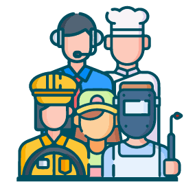
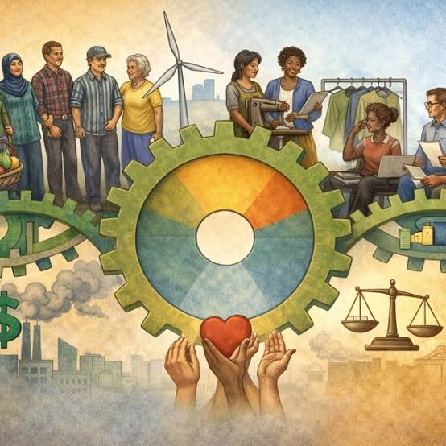

Soluciones que podrías hacer para evitar la exclusión
Las soluciones para combatir la exclusión social requieren un enfoque integral y coordinado que actúe sobre los diferentes factores económicos, educativos, laborales y comunitarios que provocan que una persona o colectivo quede marginado de la sociedad.
Dado que la exclusión es un proceso dinámico y multidimensional, las estrategias más efectivas se dividen en los siguientes ejes fundamentales:
Educación inclusiva y equitativa
La educación es la principal herramienta para romper los ciclos de exclusión intergeneracional.
- Garantía de acceso universal: Implementar programas específicos para evitar el abandono escolar temprano en entornos vulnerables.
- Currículos diversos: Modificar los planes de estudio para fomentar el respeto a la diversidad, la empatía y la resolución pacífica de conflictos.
- Formación en competencias digitales: Reducir la brecha digital capacitando a sectores vulnerables en el uso de tecnologías esenciales.

Acceso a empleo digno y capacitación laboral
El trabajo no solo otorga ingresos, sino también identidad, redes de apoyo y un rol activo en la sociedad.
- Políticas de inclusión laboral: Establecer incentivos para que las empresas contraten a personas con discapacidad o en riesgo de exclusión.
- Itinerarios de inserción individualizados: Crear programas que orienten, capaciten y acompañen a personas desempleadas.
- Formación técnica continua: Ofrecer opciones de capacitación gratuita para mejorar las oportunidades laborales.

Redes de protección social y redistribución económica
Garantizar las condiciones materiales mínimas para que cualquier ciudadano pueda participar plenamente en la vida pública.
- Estrategias comunitarias de mediación: Fomentar encuentros vecinales, actividades deportivas, centros culturales y talleres interculturales.
- Participación política y ciudadana: Abrir canales para que los grupos desfavorecidos tengan voz en las decisiones de su comunidad.
- Espacios de denuncia y legislación: Crear normas contra la discriminación por motivos de raza, género, religión o situación económica.
